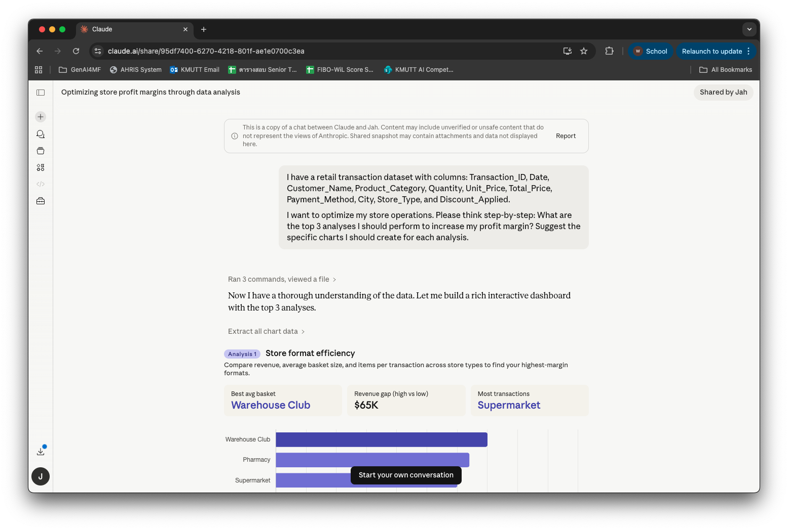
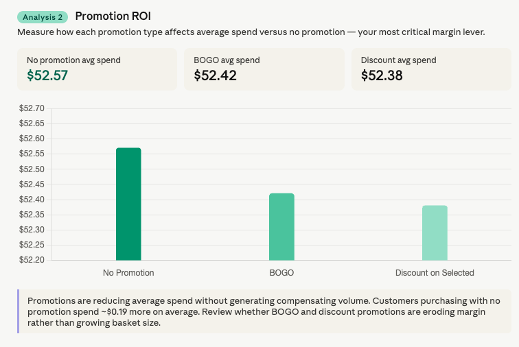
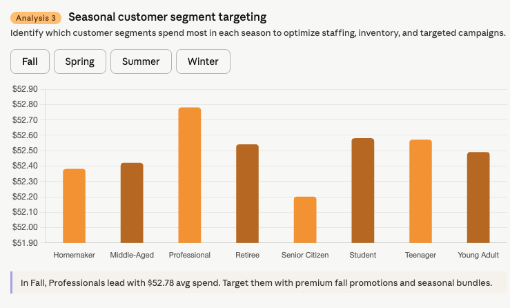

วิเคราะห์ข้อมูลด้วย AI¶
อัปโหลดไฟล์ข้อมูล → พิมพ์ prompt → ได้ dashboard แบบ interactive ทันที ไม่ต้องเขียนโค้ด ไม่ต้องรอทีม IT
แต่จุดสำคัญของหน้านี้ไม่ใช่ความเร็ว — คือการทำให้ AI แสดงวิธีคิดออกมาก่อน เพื่อให้เราตรวจได้ว่ามันคำนวณถูกจริงไหม
เครื่องมือที่ใช้: Claude — เพราะรันโค้ดวิเคราะห์ได้จริง ไม่ใช่แค่คุยเรื่องข้อมูล
ก่อนเริ่ม: เตรียมไฟล์ให้ปลอดภัย¶
ก่อนอัปโหลดข้อมูลจริง
ลบคอลัมน์ที่มีชื่อ-นามสกุล เลขบัตรประชาชน เบอร์โทร อีเมล หรือข้อมูลที่ระบุตัวบุคคลออกก่อนเสมอ — หรือใช้ข้อมูลตัวอย่างในการฝึก
การรวมข้อมูลที่ดูไม่อ่อนไหวหลายอย่างเข้าด้วยกัน (ชื่อ + ตำแหน่ง + เงินเดือน) อาจกลายเป็นข้อมูลส่วนบุคคลที่ PDPA คุ้มครองได้
ค่าใช้จ่าย
งานวิเคราะห์ข้อมูลค่อนข้างเปลือง tokens — ถ้าจะทำเป็นประจำอาจต้องมีงบประมาณซัพพอร์ต
ข้อมูลตัวอย่างสำหรับฝึก: retail transactions dataset จาก Kaggle — ดาวน์โหลดมาเล่นได้เลย
แบบฝึกหัดที่ 1: ให้ AI วางแผนวิเคราะห์ก่อน (ยังไม่ให้สรุป)¶
สถานการณ์: คุณมีไฟล์ข้อมูลอยู่ในมือ แต่ยังไม่แน่ใจว่าควรดูอะไรบ้าง
อัปโหลดไฟล์เข้า Claude แล้วใช้ prompt นี้:
ฉันมีข้อมูลธุรกรรมร้านค้า มีคอลัมน์ดังนี้: Transaction_ID, Date, Customer_Name,
Product_Category, Quantity, Unit_Price, Total_Price, Payment_Method, City,
Store_Type, Discount_Applied
ฉันต้องการเพิ่มกำไรของร้าน ช่วยคิดทีละขั้น (think step-by-step):
การวิเคราะห์ 3 อย่างแรกที่ฉันควรทำคืออะไร และแต่ละอย่างควรทำกราฟแบบไหน

ทำไมต้องถาม 'ควรวิเคราะห์อะไร' ก่อนถาม 'ผลเป็นยังไง'
ถ้าสั่งให้สรุปเลย AI จะเลือกมุมวิเคราะห์เอง แล้วเราจะไม่รู้ว่ามันมองข้ามอะไร — การให้เสนอแผนก่อนทำให้เราเห็นวิธีคิด และแก้ทิศทางได้ก่อนเสียเวลา
คำว่า "think step-by-step" เป็นเทคนิคที่วงการเรียกว่า chain-of-thought prompting ช่วยลดข้อผิดพลาดในงานที่ต้องใช้เหตุผลหลายขั้น และทำให้เราตรวจตามได้
บอกเป้าหมายทางธุรกิจ ไม่ใช่แค่คำสั่งเทคนิค — "อยากเพิ่มกำไร" ได้การวิเคราะห์ที่ตรงกว่า "ทำกราฟให้หน่อย"
แบบฝึกหัดที่ 2: ให้รันจริง แล้วตรวจการคำนวณก่อนเชื่อ¶
เลือกการวิเคราะห์ที่ตรงกับโจทย์จริง แล้วสั่งให้ Claude รันและสร้าง dashboard
เอาข้อ [เลือกข้อที่ต้องการ] มาทำจริง โดย:
- รันการวิเคราะห์และสร้างกราฟตามที่เสนอไว้
- แสดงตัวเลขกลางด้วย: ยอดรวมและจำนวนแถวของแต่ละกลุ่ม
- ถ้ามีแถวที่ข้อมูลไม่ครบหรือผิดปกติ ให้บอกว่ามีกี่แถวและจัดการอย่างไร
Claude รันโค้ดเอง วิเคราะห์เอง แล้วสร้าง interactive dashboard ให้คลิกดูได้เลย
👉 ดู Claude Conversation ตัวอย่าง — บทสนทนาเต็มตั้งแต่อัปโหลดไฟล์จนได้ dashboard



ตรวจ 4 อย่างก่อนเชื่อผลลัพธ์¶
| ตรวจอะไร | ทำยังไง |
|---|---|
| ตัวเลขถูกไหม | เปิดไฟล์ต้นฉบับ sum คอลัมน์เดียวเทียบกับที่ AI บอก — ถ้าตรง ความน่าจะเป็นที่ตัวอื่นถูกก็สูงขึ้นมาก |
| ใช้ข้อมูลครบไหม | ดูจำนวนแถวที่ AI ใช้จริง ถ้าไฟล์มี 5,000 แถวแต่ AI วิเคราะห์ 4,800 แถว แปลว่ามีข้อมูลถูกตัดทิ้งโดยไม่บอก |
| กราฟถูกต้องไหม | เช็คหน่วย ช่วงแกน และว่าเปรียบเทียบสิ่งที่เทียบกันได้จริงไหม — กราฟสวยแต่แกนผิดพบบ่อย |
| ข้อสรุปเป็นของใคร | AI คำนวณถูกไม่ได้แปลว่าตีความถูก การตีความว่า ทำไม และ ควรทำอะไรต่อ ต้องใช้ความรู้หน้างานที่ AI ไม่มี |
Garbage In Garbage Out
ถ้าข้อมูลที่ป้อนไม่ครบ format ไม่สม่ำเสมอ หรือมีแถวซ้ำ AI จะวิเคราะห์ต่อไปโดยไม่เตือน — ผลลัพธ์จะดูน่าเชื่อถือทั้งที่ผิดตั้งแต่ต้นทาง
ถ้าผลไม่ตรงที่คาด ให้ถามกลับว่า "คำนวณจากอะไร" แทนที่จะสั่งใหม่ทั้งหมด — จะได้เห็นว่าความผิดพลาดอยู่ที่ข้อมูล ที่การตีความโจทย์ หรือที่การคำนวณ
ต่อยอด: วางแผน KPI และ Dashboard ก่อนมีข้อมูล¶
AI ช่วยได้ตั้งแต่ขั้นวางแผนว่าจะวัดอะไร ไม่ใช่แค่วิเคราะห์ข้อมูลที่มีอยู่แล้ว
ฉันเป็น [ตำแหน่ง] ที่ [หน่วยงาน] ดูแล [ขอบเขตงาน]
ข้อมูลที่เรามีอยู่:
1. [ประเภทข้อมูลที่ 1 — เก็บอะไร ความถี่แค่ไหน]
2. [ประเภทข้อมูลที่ 2]
3. [ประเภทข้อมูลที่ 3]
ช่วยคิดทีละขั้น: KPI อะไรบ้างที่เราควรติดตามเพื่อวัด [เป้าหมาย]
และ dashboard ควรมีหน้าตาอย่างไร แสดงอะไรบ้าง
สรุป¶
หลักการใช้ให้ถูกต้อง
- เลือกเครื่องมือที่คำนวณจริง — chatbot ที่ไม่มี code execution จะให้ตัวเลขที่ดูสมเหตุสมผลแต่ไม่ได้คำนวณจริง
- ให้ AI เสนอแผนก่อน แล้วเราเลือก — ไม่ปล่อยให้มันตัดสินใจแทนว่าจะดูมุมไหน
- ขอตัวเลขกลาง ไม่ใช่แค่ข้อสรุป — "แสดงยอดรวมและจำนวนแถวด้วย" ทำให้ตรวจสอบได้
- เช็คตัวเลขอย่างน้อย 1 ตัวด้วยมือเสมอ — ใช้เวลาไม่ถึงนาที และเป็นการตรวจที่คุ้มที่สุด
สิ่งที่ไม่ควรทำ
- อัปโหลดข้อมูลที่มีชื่อลูกค้า นักศึกษา หรือพนักงาน เข้าเครื่องมือที่องค์กรยังไม่ได้อนุมัติ
- เชื่อ insight โดยไม่เช็คการคำนวณ — โดยเฉพาะยอดรวมและเปอร์เซ็นต์การเติบโต
- มองการตีความของ AI เป็นข้อสรุป — มันคือจุดเริ่มต้นของดุลยพินิจทางวิชาชีพ ไม่ใช่คำตอบสุดท้าย